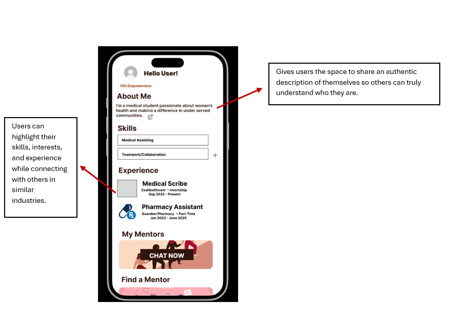
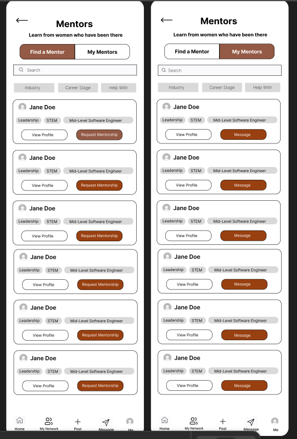
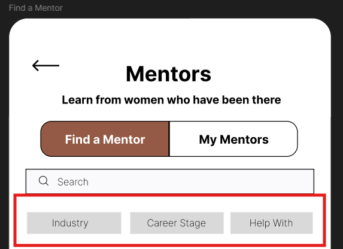
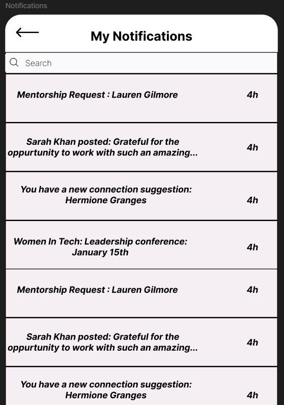

A mobile networking experience designed to help women connect, find mentorship, and feel supported in underrepresented industries.
EmpowHer is a networking platform built specifically for women in the industry, especially those in STEM who often experience underrepresentation and isolation in the workforce. The goal was to create a space where early-career professionals and experienced mentors could meaningfully connect, exchange knowledge, and grow together.
Users were curious about how to discover professionals from various industries and expressed concern that the algorithm might limit results to a single industry, preventing them from exploring other fields.
The Explore page felt passive and unengaging, reducing opportunities for building meaningful connections.
Users were unsure how they would know if they missed mentorship requests or connection invites.
Profile creation was straightforward, allowing users to showcase their experience and skills. This helped them connect with others in the same field and be discovered by people seeking expertise at a specific company or by those who recently joined and wanted to find other women at the company.

The ability to connect with experienced professionals was the most valuable feature and reinforced the app’s purpose.

Familiar interaction patterns and clear hierarchy made navigation seamless throughout the application.
Filters and search bars enable users to find specific people, companies, industries, or areas of interest, helping them connect with like-minded women in the industry and build valuable professional relationships.

We added a Like/Love feature to make interactions more engaging and personal. It allows users to respond to others’ posts, show support, and celebrate experiences, helping them build connections and feel more encouraged within the community.
Introduced a dedicated notifications page so users never miss posts, mentorship requests, or connection invites.

Strong UX decisions don’t just solve user problems — they also support business goals.
This project helped me strengthen my ability to articulate how design improves engagement, retention, and long-term platform growth — not just usability.